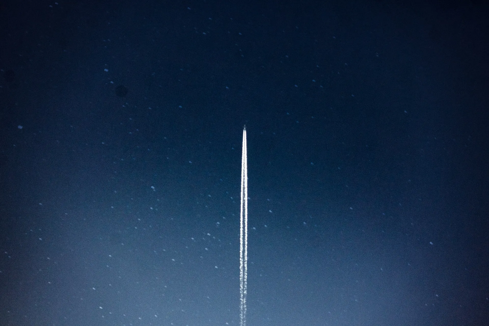

The following paragraphs consist of worldbuilding and story threads for a potential game idea I’ve had kicking around for a while. Inspiration was taken from the history of Hong Kong over the years and a desire to build an optimistic distant future from the pessimism of the near.
On the eve of the Chinese Communist Party’s 100th anniversary, the country finally makes good on their promise to retake Taiwan. A defensive alliance between the US, Korea, and Japan is made and the Pacific War officially breaks out. At first, the US plays a support role, but thanks to China’s ongoing island-creation, quick first strikes are launched against US bases across the Pacific. America puts its full might behind the war and, just as the tide seems to be turning, China does the unthinkable and launches nuclear strikes across Asia, wiping capitals off the map. Existing preoccupation with domestic politics meant US public sentiment was against the war to begin. Now, with the threat of a nuclear attack on US soil, the war is lost.
In exchange for the return of territory across the Pacific, China installs an advisor in Washington, ostensibly to prevent future conflict. This is soon extended to a state level, under the guise of economic and cultural co-operation. In the next election cycle, backlash against the administration has reached an all-time high and the favoured candidate is the state advisor from California, a female Chinese-American. With her election, ‘war-mongering’ and ‘corrupt’ officials begin to be purged and the US slowly transforms into a docile puppet state of the PRC.
As the European Union had been against the war from the start, China massively boosts economic partnerships and support in thanks. The UK, no longer part of the EU, had supported the US’s efforts and subsequently has been hit by sanctions, causing a brain drain and economic depression.
Recent immigration to Australia has boosted the local Chinese population and, as they face ever-increasing racism and discrimination, they appeal to China for help. Local cultural centres are set up with funding from the state. As Australia faces an economic downturn, the areas around these centres prosper. Violently racist attacks increase, prompting China to send in security forces to protect these communities. With a permanent Chinese army presence across most of the country, Australia is in no position to make any aggressive moves.
Any negative news and dissent from the semi-free enclaves of Hong Kong and Singapore are suppressed and redacted as these territories begin to function as a Potemkin cities, showcasing China’s past hands-off approach to ‘autonomy with Chinese characteristics’. Concerns about hidden inequality and ideological differences between party loyals and the cowed populace slowly fade away.
• • •
Decades on, Hongkongers and other refugees from China’s global dominion dot the sparse and remote South Pacific islands. With all its power, China could launch an operation to round up these refugees for good, and warships do occasionally patrol… but running a global authoritarian state requires focus on bigger things.
Some float by on abandoned cargo ships, while others live at abandoned American weather stations. These stations house balloon launchpads, meant for kick-starting both citizen scientific and military orbital transfers. But, as private companies have built more and more orbital resorts, single-purpose governmental and scientific space stations have slowly been abandoned. The ISS has orbited empty for decades since NASA was defunded and merged with the CNSA, ESA, and Roscosmo to form a new Global Space Agency. All non-commercial space activity now takes place at China’s new orbital island, Tianhe.
• • •
The date Hong Kong’s 50 years of post-colonial autonomy officially would have run out. In the territory itself, little changes, but on an isolated island in Micronesia, a celebration steeped in irony is taking place. This island has become the de facto capital for displaced Hongkongers, most of whom hijacked or stowed away on cargo freighters in the midst of the Pacific War. Other refugees have also been sporadically welcomed over the years and the population now numbers around 10,000, including the around 6,000 original islanders.
• • •
A small yacht pulls into the bay. Two middle-aged women splash down in the surf, both awkwardly holding heavy briefcases above the water. Guards beckon them forward. As they emerge onto the sand and greet the guards in Cantonese, we can see thin lines of triumph behind the complete exhaustion in their bodies.
Ada is an IT specialist, Marie, an astronomer, both working at Hong Kong University. Friends since childhood, they experienced the turmoil of early 21st century Hong Kong firsthand. However, like many activists before them, they vowed to put their past behind and slot themselves into the new world order, ensuring an easy and comfortable adult life… until last week. Archived research encrypted since 1997 was ordered to be examined and determined whether to be kept or purged. Each department was assigned an IT specialist and work began promptly.
Poring through reams of documents, these two friends reconnected and reminisced, not paying much heed to the papers until one in particular caught Marie’s eye: published by a Chinese researcher, it detailed a system to be implemented on the upcoming ISS, allowing it to be completely independent from resupply missions. It was deemed infeasible, however, due to massive up-front costs and the fact that it was simpler to resupply as astronauts themselves came and went. Marie peruses this document more intently and connections begin to form in her mind.
The abandoned ISS is still in orbit.
Tiangong-4 can connect to the ISS, it was built in an era of international cooperation.
The supplies necessary for Wang’s system are relatively easy to get nowadays.
Baloon launchpads across former American possessions in the Pacific should still be functional.
A self-sustaining space station would technically be out of the grasp of China… for a time.
The two discuss these ideas and old flames are reignited as they plan to smuggle these plans out of the country. Luckily, Ada has a yacht.
• • •
Having recovered for a bit, the community discusses the merits and dangers of this new plan. Of course a launch and reactivation of an abandoned space station would not go unnoticed by China. A few prefer to stay on the island, but most debate whether they can use this chance to somehow strike an unexpected blow against the Chinese regime… or if they should seek to modify the station further, escape orbit, and leave the Earth behind, once and for all…
• • •
First volume can be the start of their journey and a flashback to the war or the island happens at one point.
How do they survive beyond the orbit? What is the trajectory? Who/what follows them? Will they land somewhere?
How do they get a rocket to the ISS? There must be a suspenseful docking sequence puzzle game.
Branching stories: if a player doesn’t get a puzzle right, the story just ends for that character.
Maybe they can move the ISS to a Lagrange Point and send harvesters to the asteroid belt for water?
END TRANSMISSION